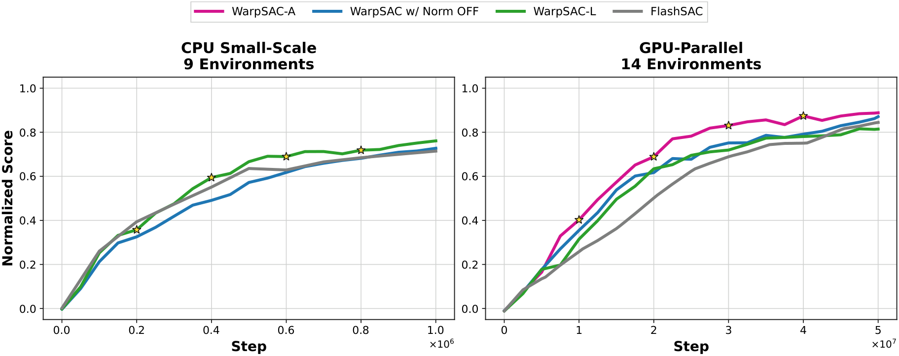

Method
WarpSAC is a controlled extension of FlashSAC that separates replay-side exploitation from network-side stabilization. Its main replay component, Sample Weight Decay (SWD), assigns each transition an age-dependent sampling weight. Recent, policy-relevant data are sampled more often, while older transitions retain a nonzero weight for coverage. SWD changes only the minibatch distribution; it introduces no auxiliary network, Bellman target, or loss term.
Parameter projection normalization is selected according to replay coverage. It renormalizes network parameters after each optimizer step, constraining the effective function class and reducing unstable value extrapolation. CPU-scale training has narrower replay coverage, so WarpSAC-L keeps normalization enabled together with clipped double-Q targets. GPU-parallel simulation collects broad, rapidly refreshed data; in this data-abundant regime, the same constraint can restrict value fitting, so WarpSAC-A disables normalization and uses the less conservative single-Q variant.
| Profile | Configuration |
|---|---|
| WarpSAC-L | Data-limited CPU scale: SWD, Norm ON, clipped double-Q |
| WarpSAC-A | Data-abundant GPU scale: SWD, Norm OFF, single-Q |
| Automatic profiles | Defaults are resolved from the environment type and replay regime |

Figure 2. Combined CPU-scale and GPU-parallel learning curves. We recommend WarpSAC-L for CPU-scale training and WarpSAC-A for GPU-parallel training.